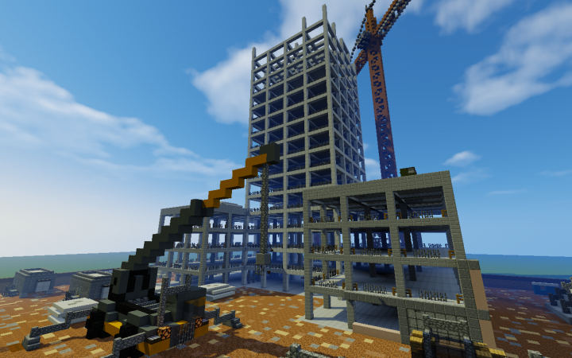
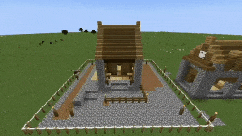
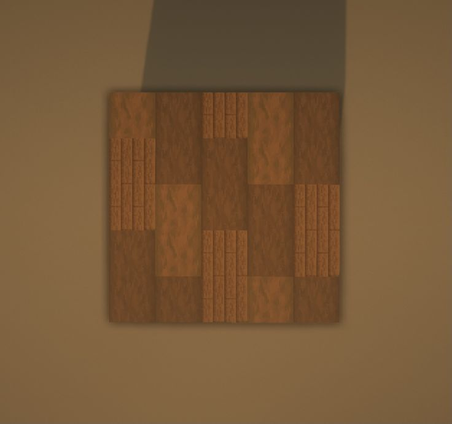
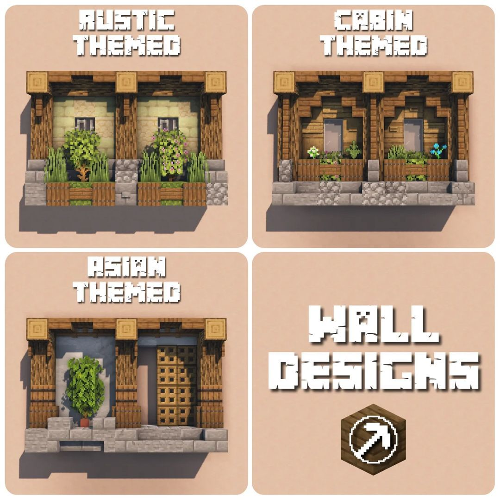
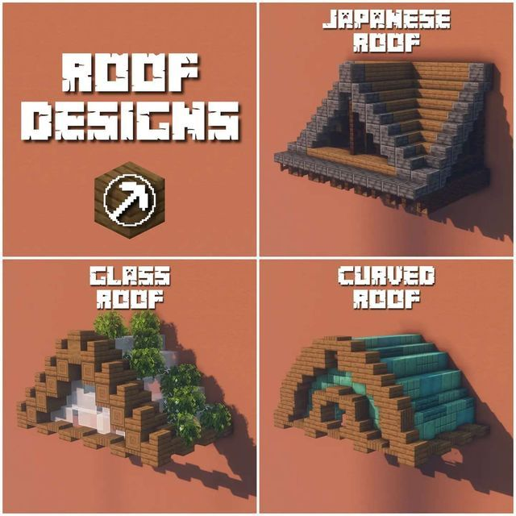
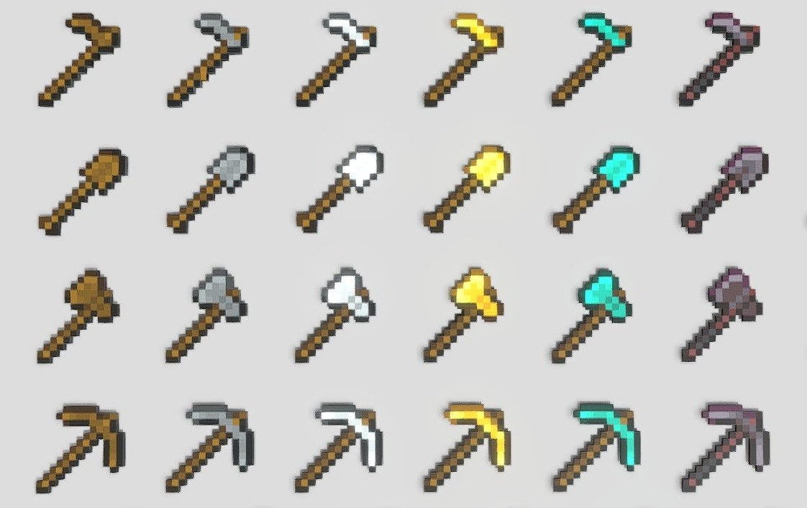
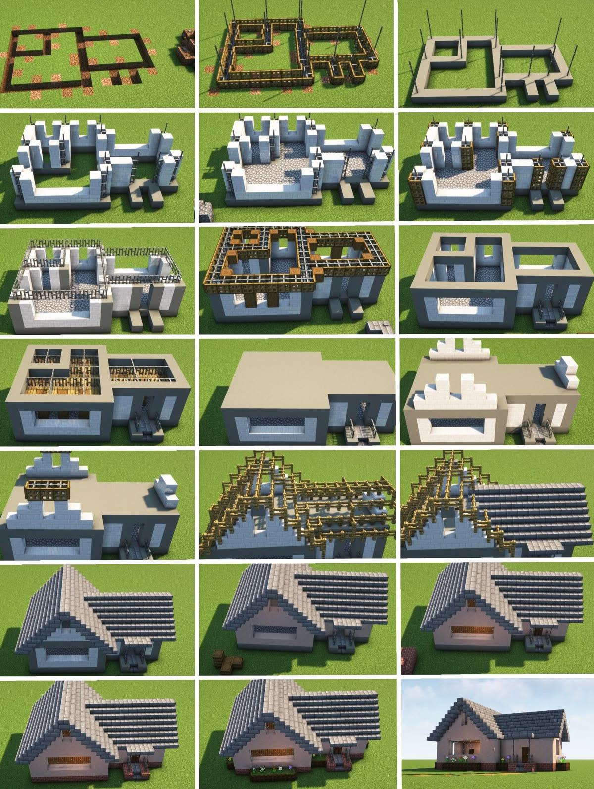
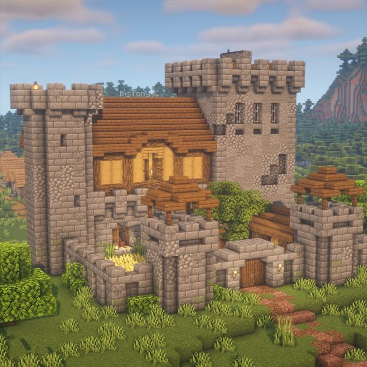

ДОБРО ПОЖАЛОВАТЬ В ШКОЛУ СТРОИТЕЛЬСТВА
WELCOME TO THE BUILDING SCHOOL
Только начинаешь свой путь в Майнкрафт? Чувствуешь, что твои первые постройки выглядят как обычные коробки из земли и камня? Не переживай, через это проходят все! Этот гайд создан специально для таких новичков, как ты.
Just starting your journey in Minecraft? Feel like your first builds look like simple boxes of dirt and stone? Don't worry, everyone goes through this! This guide is created especially for beginners like you.
Здесь ты научишься не просто ставить блоки друг на друга, а создавать настоящие архитектурные шедевры. Мы расскажем о планировании, выборе стиля, сочетании блоков и секретных приемах профессиональных строителей.
Here you'll learn not just to place blocks on top of each other, but to create real architectural masterpieces. We'll tell you about planning, style selection, block combinations and secret techniques of professional builders.
От маленького уютного домика на дереве до огромного средневекового замка с подземельями — всё это станет реальностью, если следовать нашим советам. Главное — терпение и практика!
From a small cozy treehouse to a huge medieval castle with dungeons - it can all become reality if you follow our advice. The main thing is patience and practice!

ПРОЦЕСС СТРОИТЕЛЬСТВА
BUILDING PROCESS

Так выглядит строительство дома от фундамента до крыши. Обрати внимание, как меняется детализация на каждом этапе.
This is what building a house looks like from foundation to roof. Notice how the detailing changes at each stage.
ЧТО ТЫ НАЙДЕШЬ НА САЙТЕ
WHAT YOU'LL FIND ON THE SITE
ОСНОВЫ
BASICS
В этом разделе мы расскажем с чего начать строительство: выбор места, подготовка материалов, планировка, фундамент, стены, крыша. Ты узнаешь какие блоки лучше использовать для разных элементов постройки и почему некоторые материалы лучше сочетаются друг с другом.
In this section we'll tell you where to start building: site selection, material preparation, planning, foundation, walls, roof. You'll learn which blocks are best for different building elements and why some materials combine better with each other.
СТИЛИ
STYLES
Майнкрафт позволяет строить в самых разных архитектурных стилях. Мы подробно разберем средневековый стиль с его замками и тавернами, деревенский стиль с уютными домиками, современную архитектуру с бетоном и стеклом, а также фэнтези-стиль с причудливыми формами и необычными блоками.
Minecraft allows you to build in various architectural styles. We'll thoroughly examine medieval style with its castles and taverns, rustic style with cozy houses, modern architecture with concrete and glass, and fantasy style with whimsical shapes and unusual blocks.
СЕКРЕТЫ
SECRETS
В этом разделе собраны лайфхаки профессиональных строителей: как делать крутые крыши, как прятать свет, как добавлять детали, чтобы дом выглядел жилым, какие текстурные сочетания работают лучше всего, как правильно делать пропорции и многое другое.
This section contains lifehacks from professional builders: how to make cool roofs, how to hide light, how to add details to make the house look lived-in, which texture combinations work best, how to make proper proportions and much more.
ГАЛЕРЕЯ
GALLERY
Галерея с примерами красивых построек для вдохновения. Здесь ты увидишь работы других игроков: замки, деревни, современные виллы, подводные базы, дома на деревьях и многое другое. Каждая постройка сопровождается описанием использованных блоков и стиля.
Gallery with examples of beautiful builds for inspiration. Here you'll see other players' work: castles, villages, modern villas, underwater bases, treehouses and much more. Each build comes with a description of the blocks used and style.
ОСНОВЫ СТРОИТЕЛЬСТВА
BUILDING BASICS
Первый дом: с чего начать?
First house: where to start?

Когда ты только начинаешь играть, очень хочется построить что-то грандиозное. Но опытные строители советуют начинать с малого. Выбери ровную площадку, лучше всего в равнинном биоме рядом с лесом (чтобы было много дерева). Размер первого дома не должен быть слишком большим: оптимально 7х7 блоков в основании. Стены делай высотой 4 блока - этого достаточно, чтобы внутри не было тесно, но и не слишком высоко для начинающего строителя.
When you're just starting to play, you really want to build something grand. But experienced builders advise starting small. Choose a flat area, preferably in a plains biome next to a forest (to have plenty of wood). The size of your first house shouldn't be too big: optimally 7x7 blocks at the base. Make walls 4 blocks high - this is enough to not feel cramped inside, but not too high for a beginner builder.
Фундамент и пол
Foundation and floor

Многие новички пропускают этот этап и начинают сразу строить стены на земле. Это ошибка! Сначала нужно сделать фундамент - периметр из прочных блоков (булыжник или камень). Затем внутри периметра залей пол. Для пола лучше использовать деревянные доски - они красиво выглядят и легко добываются. Если хочешь сделать дом более интересным, используй разные породы дерева для пола, создавая узоры.
Many beginners skip this stage and start building walls directly on the ground. This is a mistake! First you need to make a foundation - a perimeter of strong blocks (cobblestone or stone). Then fill the floor inside the perimeter. For the floor, it's better to use wooden planks - they look nice and are easy to obtain. If you want to make the house more interesting, use different wood types for the floor, creating patterns.
Стены и проемы
Walls and openings

Стены лучше делать комбинированными. Не используй один тип блоков для всей стены - это выглядит скучно. Попробуй сочетать дерево и булыжник, добавляй вкрапления из других материалов. Не забывай про оконные проемы! Стандартное окно имеет ширину 2 блока и высоту 3 блока. Дверь ставь на уровне пола, перед ней можно сделать небольшое крыльцо из ступенек.
Walls are better made combined. Don't use one type of blocks for the entire wall - it looks boring. Try combining wood and cobblestone, add inclusions of other materials. Don't forget about window openings! A standard window is 2 blocks wide and 3 blocks high. Place the door at floor level, you can make a small porch in front of it from stairs.
Крыша - всему голова
Roof - the crowning element

Крыша превращает обычную коробку в настоящий дом. Самый простой вариант - двускатная крыша. Делается она из ступенек. Начни с края: поставь ступеньки, поднимаясь на один блок каждые два блока длины. Когда дойдешь до середины, начни спускаться. Для более сложных крыш используй комбинации ступенек, плит и целых блоков. Цвет крыши должен контрастировать со стенами.
The roof turns an ordinary box into a real house. The simplest option is a gable roof. It's made from stairs. Start from the edge: place stairs, rising one block every two blocks of length. When you reach the middle, start descending. For more complex roofs, use combinations of stairs, slabs, and full blocks. The roof color should contrast with the walls.
Инструменты строителя
Builder's tools

Для эффективного строительства тебе понадобятся правильные инструменты. Топор нужен для добычи дерева - чем лучше топор, тем быстрее идет заготовка материалов. Кирка нужна для камня, булыжника, руд. Лопата пригодится для выравнивания площадки под строительство. И обязательно возьми с собой ведро воды - оно спасет тебя при падении с высоты и поможет быстро убирать лишнюю землю.
For effective building you'll need the right tools. An axe is needed for wood - the better the axe, the faster the material gathering. A pickaxe is needed for stone, cobblestone, ores. A shovel will be useful for leveling the building site. And be sure to take a water bucket - it will save you when falling from heights and help quickly remove excess dirt.
Планирование постройки
Build planning

Прежде чем начать строить, потрать время на планирование. Нарисуй план на бумаге или используй цветную шерсть для разметки комнат прямо в игре. Определись, где будут спальня, кладовка, печка, верстак. Подумай о том, где будут окна и вход. Хороший план экономит часы переделок и материалов.
Before you start building, spend time planning. Draw a plan on paper or use colored wool to mark rooms right in the game. Decide where the bedroom, storage, furnace, crafting table will be. Think about where windows and entrance will be. A good plan saves hours of rework and materials.
ВИДЕО: КАК ПОСТРОИТЬ ПЕРВЫЙ ДОМ
VIDEO: HOW TO BUILD YOUR FIRST HOUSE
В этом видео показан процесс строительства простого, но красивого дома для новичков. Автор подробно объясняет каждый шаг и показывает удачные сочетания блоков.
This video shows the process of building a simple but beautiful house for beginners. The author explains each step in detail and shows successful block combinations.
АРХИТЕКТУРНЫЕ СТИЛИ
ARCHITECTURAL STYLES
Средневековый стиль
Medieval style
Средневековый стиль - один из самых популярных в Майнкрафте. Для него характерно использование булыжника, камня, темного дуба, каменных кирпичей. Обязательные элементы: узкие окна-бойницы, высокие башни, массивные деревянные ворота, подъемные мосты, факелы на стенах. Крыши обычно остроконечные, темных цветов. Этот стиль идеально подходит для замков, крепостей и средневековых деревень.
Medieval style is one of the most popular in Minecraft. It is characterized by the use of cobblestone, stone, dark oak, stone bricks. Required elements: narrow loophole windows, tall towers, massive wooden gates, drawbridges, torches on walls. Roofs are usually pointed, dark colors. This style is perfect for castles, fortresses and medieval villages.

Деревенский стиль
Rustic style
Деревенский стиль отличается уютом и естественностью. Основные блоки: дуб, ель, береза, сено, тыквы, цветы. Дома в этом стиле имеют неправильную форму, как будто их строили постепенно, добавляя новые комнаты. Крыши делают зелеными, чтобы дом сливался с природой. Обязательно добавь огородик с тыквами и арбузами, небольшой мостик через ручей, заборчик из жердей.
Rustic style is characterized by coziness and naturalness. Main blocks: oak, spruce, birch, hay, pumpkins, flowers. Houses in this style have irregular shapes, as if they were built gradually, adding new rooms. Roofs are made green so the house blends with nature. Be sure to add a garden with pumpkins and melons, a small bridge over a stream, a fence of poles.

Современный стиль
Modern style
Современная архитектура в Майнкрафте строится на контрастах и четких линиях. Используй белый бетон, серый бетон, стеклянные панели, кварц. Характерные черты: плоские крыши, большие панорамные окна, асимметрия, нависающие этажи. Можно делать многоуровневые террасы, использовать ступеньки и плиты для создания современной мебели. Для освещения используй скрытый свет.
Modern architecture in Minecraft is built on contrasts and clean lines. Use white concrete, gray concrete, glass panels, quartz. Characteristic features: flat roofs, large panoramic windows, asymmetry, overhanging floors. You can make multi-level terraces, use stairs and slabs to create modern furniture. For lighting, use hidden light.

Фэнтези стиль
Fantasy style
Фэнтези стиль позволяет оторваться от реальности и построить то, что невозможно в обычном мире. Используй пурпурные блоки, призмарин, светокамень, эндерняк, незерские кирпичи. Строй дома в огромных грибах, летающие острова с водопадами, деревья с жилыми дуплами, хрустальные дворцы. Здесь нет правил - чем необычнее форма, тем лучше.
Fantasy style allows you to break away from reality and build what's impossible in the ordinary world. Use purpur blocks, prismarine, glowstone, end stone, nether bricks. Build houses in giant mushrooms, floating islands with waterfalls, trees with hollow living spaces, crystal palaces. There are no rules here - the more unusual the shape, the better.

СРАВНЕНИЕ СТИЛЕЙ
STYLE COMPARISON

На этой гифке показаны примеры разных стилей. Обрати внимание на разницу в формах, цветах и деталях.
This gif shows examples of different styles. Notice the difference in shapes, colors and details.
СЕКРЕТЫ ПРОФЕССИОНАЛОВ
PROFESSIONAL SECRETS
Текстурные сочетания
Texture combinations
Секрет красивой постройки - в правильном сочетании текстур. Запомни базовые пары: дуб и булыжник создают классическое средневековье; ель и каменный кирпич подходят для таверн; береза и кварц дают современный вид; темный дуб и адский кирпич создают мрачную атмосферу. Не бойся смешивать 3-4 типа блоков в одной постройке.
The secret of a beautiful build is the right combination of textures. Remember basic pairs: oak and cobblestone create a classic medieval look; spruce and stone bricks suit taverns; birch and quartz give a modern look; dark oak and nether brick create a gloomy atmosphere. Don't be afraid to mix 3-4 block types in one build.
Детализация
Detailing
Дом выглядит жилым, когда в нем много деталей. Добавь ставни на окна, поставь горшки с цветами на подоконники, повесь фонари под крышей, сделай небольшую клумбу у входа. Внутри используй картины, рамки с инструментами и едой, поставь книжные полки, создай камин. Даже мелкие детали добавляют реализма.
A house looks lived-in when it has many details. Add shutters to windows, put flower pots on windowsills, hang lanterns under the roof, make a small flowerbed at the entrance. Inside, use paintings, item frames with tools and food, place bookshelves, create a fireplace. Even small details add realism.
Правильные пропорции
Correct proportions
Высота стен должна быть нечетной (5, 7 или 9 блоков) - это позволяет сделать симметричную крышу. Окна делай шириной 2 блока и высотой 3. Двери ставь высотой 2 блока. Расстояние между окнами - не меньше 2 блоков. Высота этажа - минимум 4 блока. Соблюдение этих пропорций сделает постройку визуально приятной.
Wall height should be odd (5, 7 or 9 blocks) - this allows for a symmetrical roof. Make windows 2 blocks wide and 3 high. Place doors 2 blocks high. The distance between windows should be at least 2 blocks. Floor height should be at least 4 blocks. Following these proportions will make the build visually pleasing.
Секреты освещения
Lighting secrets
Профессионалы прячут источники света: ставь светокамень под ковры; используй светящиеся рамы с предметами; закапывай факелы в пол, накрывая ковриками; делай скрытые ниши с освещением за мебелью. Так будет светло, но не будут видны сами источники света.
Professionals hide light sources: place glowstone under carpets; use glowing item frames with items; bury torches in the floor, covering them with carpets; make hidden niches with lighting behind furniture. This way it will be bright, but the light sources themselves won't be visible.
Ландшафт и окружение
Landscape and surroundings
Дом не должен стоять на голой земле. Облагородь территорию вокруг: выровняй землю, посади деревья и кусты, проложи дорожки, поставь забор, сделай сад. Если рядом есть вода, облагородь берег. Дом, вписанный в ландшафт, выглядит в разы лучше, чем просто коробка посреди пустыря.
The house shouldn't stand on bare ground. Improve the area around: level the ground, plant trees and bushes, lay paths, put up a fence, make a garden. If there's water nearby, improve the shore. A house integrated into the landscape looks much better than just a box in the middle of a wasteland.
Работа с глубиной
Working with depth
Плоские стены выглядят скучно. Добавляй глубину: делай оконные проемы с углублением, добавляй выступающие балки, используй ступеньки для создания карнизов, делай колонны по углам. Даже небольшое изменение рельефа стены создает игру света и тени, делая постройку объемной.
Flat walls look boring. Add depth: make window openings recessed, add protruding beams, use stairs to create cornices, make columns at the corners. Even a slight change in the wall relief creates a play of light and shadow, making the build three-dimensional.
ГАЛЕРЕЯ ПОСТРОЕК
BUILDS GALLERY

Средневековый замок
Medieval castle
Большой замок в средневековом стиле с башнями, стеной и подъемным мостом. Использованы блоки: камень, булыжник, темный дуб. Внутри тронный зал, жилые комнаты и подземелье.
Large medieval style castle with towers, wall and drawbridge. Blocks used: stone, cobblestone, dark oak. Inside there's a throne room, living quarters and a dungeon.

Дом в лесу
Forest house
Уютный деревенский дом среди леса. Блоки: ель, дуб, сено, тыквы. Вокруг посажены деревья и цветы, есть огород и мостик через ручей.
Cozy rustic house in the forest. Blocks: spruce, oak, hay, pumpkins. Trees and flowers planted around, there's a garden and a bridge over a stream.

Современная вилла
Modern villa
Современная вилла с панорамными окнами и плоской крышей. Блоки: белый бетон, стекло, кварц. Есть бассейн, терраса и внутренний дворик.
Modern villa with panoramic windows and flat roof. Blocks: white concrete, glass, quartz. There's a pool, terrace and courtyard.

Дом на дереве
Treehouse
Фэнтезийный дом внутри гигантского дерева. Блоки: дерево, листва, светокамень. Несколько уровней, подвесные мостики и балконы.
Fantasy house inside a giant tree. Blocks: wood, leaves, glowstone. Multiple levels, hanging bridges and balconies.

Подводная база
Underwater base
Стеклянный купол под водой. Блоки: стекло, призмарин, светокамень. Внутри фермы и обсерватория для наблюдения за рыбами.
Glass dome underwater. Blocks: glass, prismarine, glowstone. Inside: farms and an observatory for watching fish.

Средневековая деревня
Medieval village
Несколько домов в средневековом стиле. Есть кузница, таверна, фермерские домики. В центре колодец и площадь с факелами.
Several medieval style houses. There's a blacksmith, tavern, farmhouses. In the center - a well and a square with torches.
ВИДЕО: ОБЗОР ПОСТРОЕК
VIDEO: BUILDS REVIEW
Лучшие постройки игроков со всего мира для твоего вдохновения.
The best builds from players around the world for your inspiration.